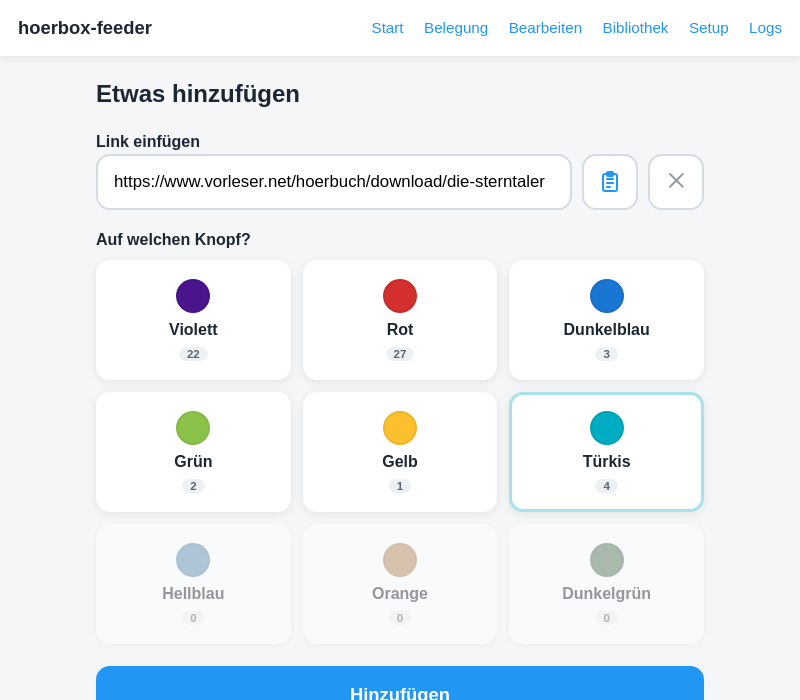
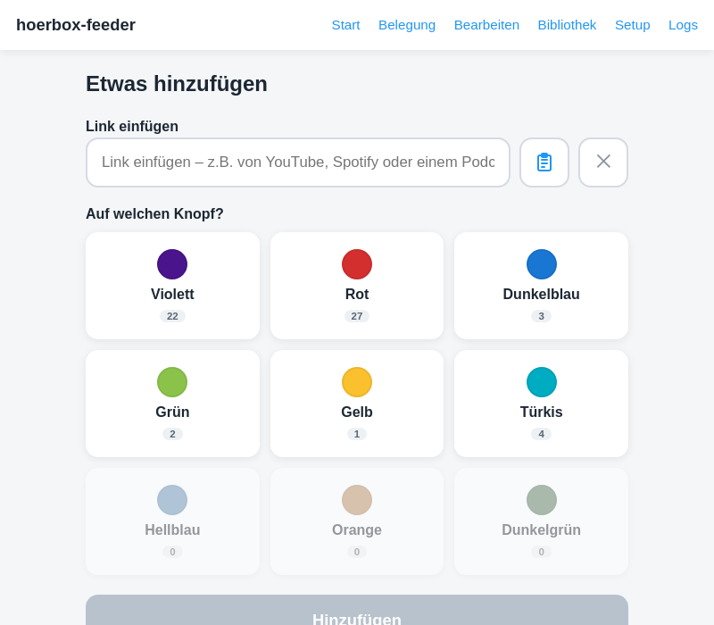
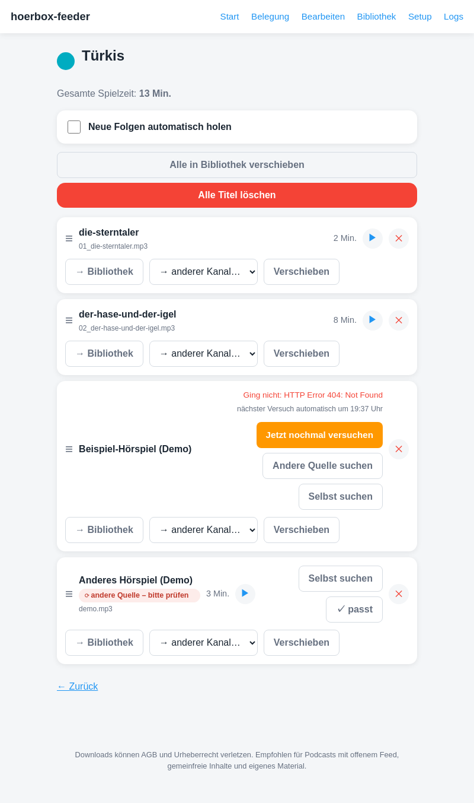
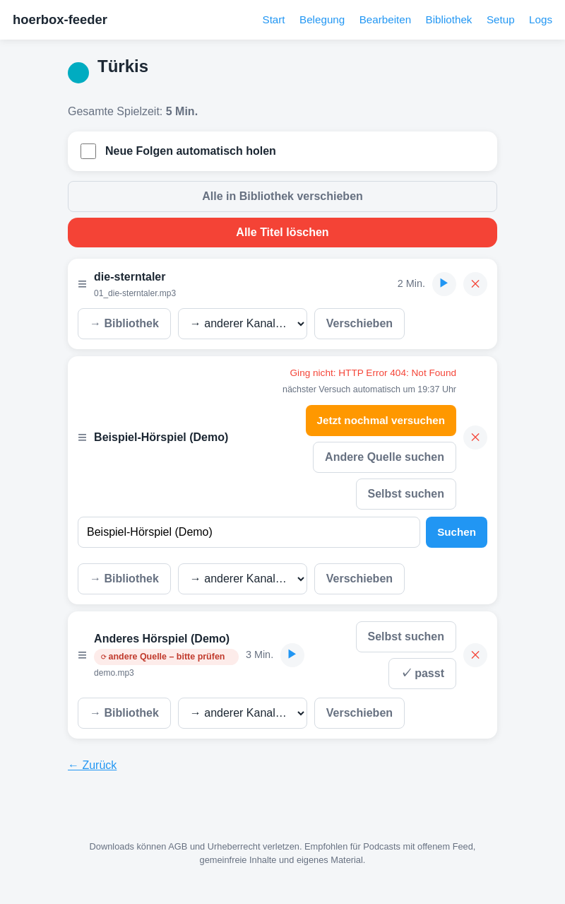
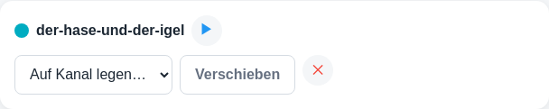
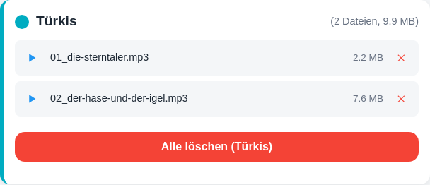
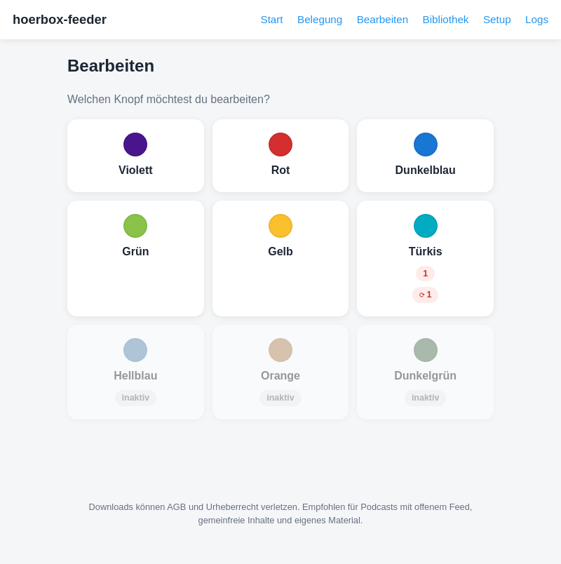
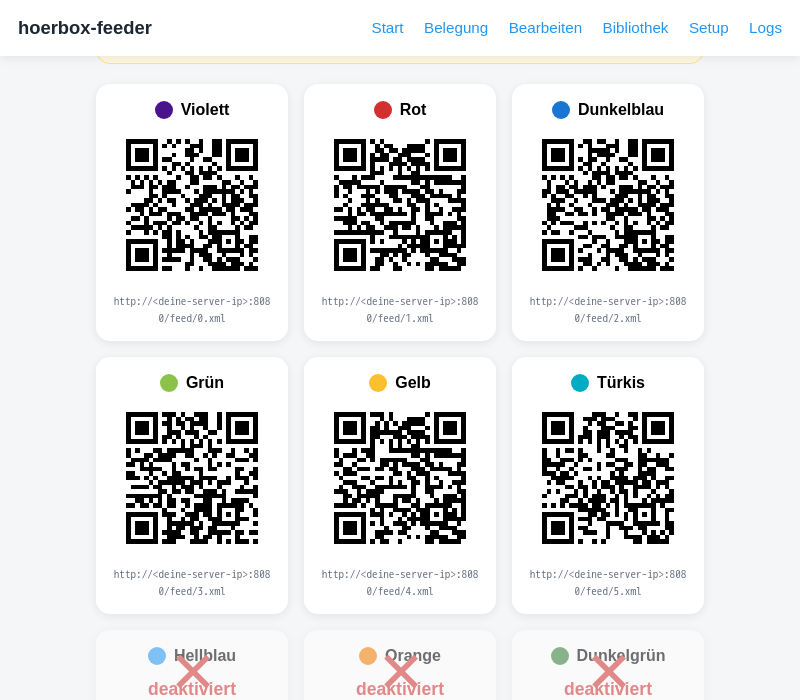
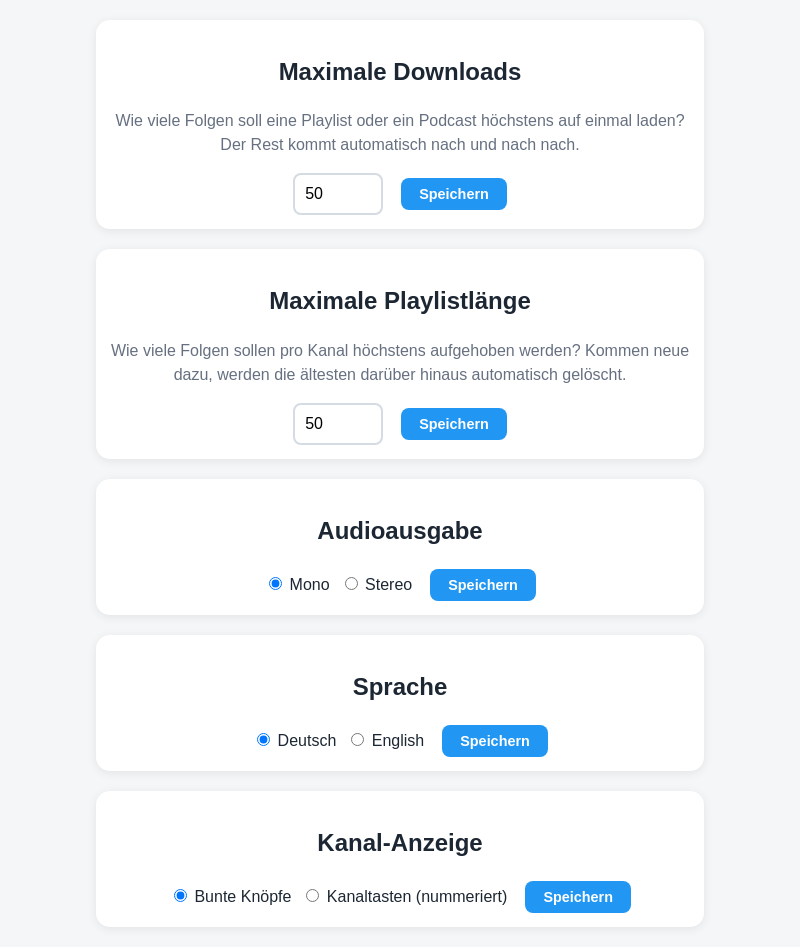
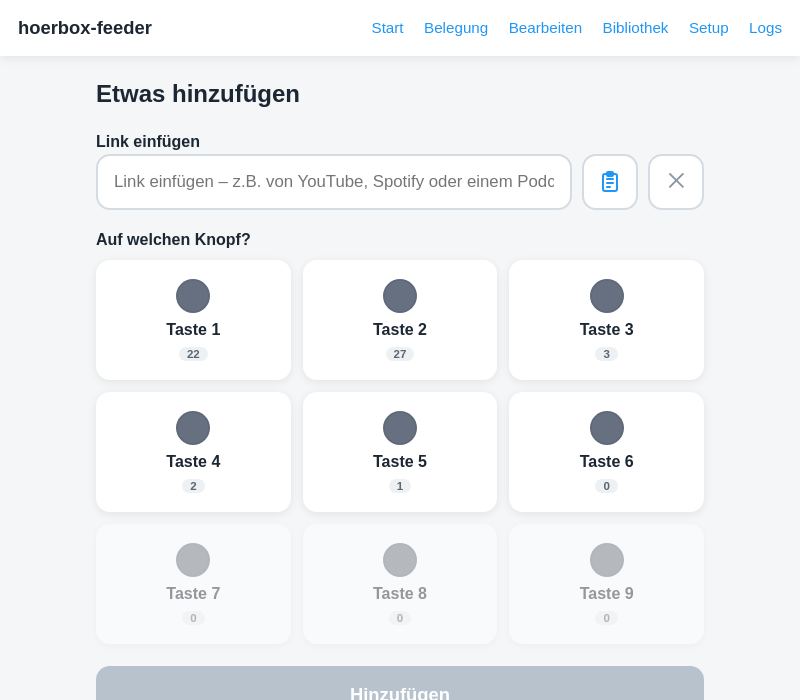

Benutzerhandbuch – so füllst du die neun Knöpfe mit Musik, Hörspielen und Podcasts, ganz ohne Kabel oder SD-Karte.
hoerbox-feeder ist eine kleine Web-Seite, die im heimischen WLAN läuft. Du fügst dort per Handy, Tablet oder PC einen Link ein – z. B. von YouTube, Spotify oder einem Podcast – und ordnest ihn einem von neun farbigen Knöpfen zu. hoerbox-feeder lädt den Inhalt herunter, wandelt ihn in ein einheitliches Tonformat um und macht ihn dem Abspielgerät automatisch verfügbar. Neue Folgen einer Playlist oder eines Podcasts kommen danach von selbst nach – du musst nichts wiederholen.
Das ist der Weg, den du am häufigsten gehst:

Link eingefügt, Knopf „Türkis“ ausgewählt – der „Hinzufügen“-Knopf wird aktiv.
Danach siehst du eine Anzeige mit dem Fortschritt: erst „Wird vorbereitet …“, dann „Wird geladen … X %“, zum Schluss kurz „Umwandlung zu Audio …“. Ist es fertig, taucht der Titel im gewählten Kanal auf.
Handelt es sich um eine ganze Playlist oder einen Podcast-Feed statt eines einzelnen Titels, erkennt hoerbox-feeder das automatisch und richtet ein Abo ein: neue Folgen werden von da an regelmäßig von selbst nachgeladen, ohne dass du den Link erneut einfügen musst (mehr dazu in Kapitel 4).
Auf der Startseite siehst du alle neun Knöpfe mit ihrer Farbe und – klein darunter – wie viele Titel dort aktuell liegen. Ein Knopf kann auch deaktiviert sein (grau dargestellt): das ist z. B. sinnvoll, wenn dieser Knopf am Gerät extern bespielt wird, etwa per SD-Karte, und hoerbox-feeder ihn deshalb in Ruhe lassen soll (siehe Kapitel 9).

Sechs aktive Knöpfe mit Belegungszahl, drei deaktivierte (ausgegraut).
Tippst du auf einen Knopf, siehst du alle seine Titel. Pro Titel stehen dir folgende Möglichkeiten zur Verfügung:
Gehört ein Titel zu einer Playlist oder einem Podcast-Abo, werden alle zugehörigen Folgen zu einem Block zusammengefasst (auf-/zuklappbar), mit denselben Aktionen zusätzlich für den ganzen Block auf einmal. Über den Schalter Neue Folgen automatisch holen lässt sich das automatische Nachladen für diesen Kanal ein- oder ausschalten – ist er aus, bleiben vorhandene Folgen erhalten, es kommt aber nichts Neues mehr von selbst dazu.
Über den Kanal-Kopf lässt sich außerdem der ganze Kanal auf einmal in die Bibliothek verschieben oder komplett löschen:

Kanal-Ansicht: zwei fertige Titel, ein fehlgeschlagener Titel und ein Titel mit automatisch gefundener Ersatzquelle – alle Aktionen im Überblick (Beispielinhalte, gemeinfrei).
Manchmal lässt sich ein Link nicht laden (z. B. weil das Video gelöscht wurde). Der Titel zeigt dann eine kurze Fehlermeldung und bietet:

„Selbst suchen“ öffnet ein Eingabefeld direkt unter dem betroffenen Titel.
Wurde eine Ersatzquelle automatisch gefunden (ohne dass jemand sie sich angesehen hat), erscheint am Titel der Hinweis ⟳ andere Quelle – bitte prüfen. Kurz anhören reicht meist, um zu sehen ob es passt – ein Tipp auf ✓ passt blendet den Hinweis danach aus.
Die Bibliothek ist ein Zwischenlager für Titel und Playlists, die gerade keinem Knopf zugeordnet sein sollen, aber nicht gelöscht werden sollen. Von dort aus lässt sich jeder Eintrag jederzeit wieder einem Knopf zuweisen, abspielen, verschieben oder endgültig löschen.

Ein geparkter Titel in der Bibliothek.
Die Belegung-Seite zeigt, wie viel Speicherplatz insgesamt und pro Knopf belegt ist, mit jeder einzelnen Datei zum Anhören oder Löschen. Falls dein Abspielgerät per SD-Karte bespielt wird statt per WLAN, lädt der Knopf „Für SD-Karte herunterladen“ ganz oben alle Titel als ZIP-Datei herunter, bereits in nummerierten Ordnern 0–8 sortiert – einfach entpacken und auf die Karte kopieren.

Belegung eines Kanals mit zwei Dateien.
„Bearbeiten“ ist der schnelle Weg zu einem bestimmten Knopf, mit kleinen Warn-Hinweisen direkt auf der Kachel: eine rote Zahl zeigt Titel, die gerade ein Problem haben, ein ⟳-Chip zeigt automatisch gefundene, noch ungeprüfte Ersatzquellen.

Ein Knopf mit einem Problem-Titel und einer noch zu prüfenden Ersatzquelle.
Die Setup-Seite ist vor allem für die einmalige Einrichtung gedacht:
Jeder Knopf hat eine eigene Adresse (als QR-Code und als Text), die einmalig im Abspielgerät oder einer Podcast-App eingetragen wird. Danach erscheinen neue Titel dort von selbst.

Jeder Knopf bekommt seine eigene Adresse zum einmaligen Eintragen.
Läuft auf einem Knopf externer Content (z. B. von einer SD-Karte)? Dann kannst du ihn hier deaktivieren, indem du auf den jeweiligen QR-Code klickst. hoerbox-feeder lässt ihn dann in Ruhe, damit nichts durcheinanderkommt.
Fünf Werte lassen sich hier für die ganze Anwendung anpassen:

| Maximale Downloads | wie viele Folgen einer Playlist/eines Podcasts beim ersten Mal höchstens auf einmal geladen werden – der Rest kommt automatisch nach und nach nach. |
| Maximale Playlistlänge | wie viele Folgen pro Knopf höchstens aufgehoben werden – ältere Folgen darüber hinaus werden automatisch in die Bibliothek verschoben (nicht gelöscht). |
| Audioausgabe | Mono oder Stereo für neue Downloads. Bereits geladene Titel behalten ihre bisherige Tonspur. |
| Sprache | Deutsch oder English – stellt die komplette Oberfläche um, sofort nach dem Speichern. |
| Kanal-Anzeige | bunte Knöpfe (Standard) oder Kanaltasten – zeigt alle neun Knöpfe stattdessen neutral/grau mit einer Nummer (1–9) statt Farbname, für Hörbert-Varianten ohne Farbtasten. |
Im Kanaltasten-Modus sehen alle Knöpfe – hier am Beispiel der Startseite – statt Farbe/Farbname nur noch eine Nummer.

Werden YouTube-Downloads blockiert, lässt sich außerdem ein YouTube-Zugang (Cookies-Datei) hochladen – ein grüner Haken oben auf der Setup-Seite zeigt, ob das bereits eingerichtet ist.
Bei Fragen, Fehlern oder Ideen wendet euch am besten an die Person, die hoerbox-feeder bei euch eingerichtet hat.